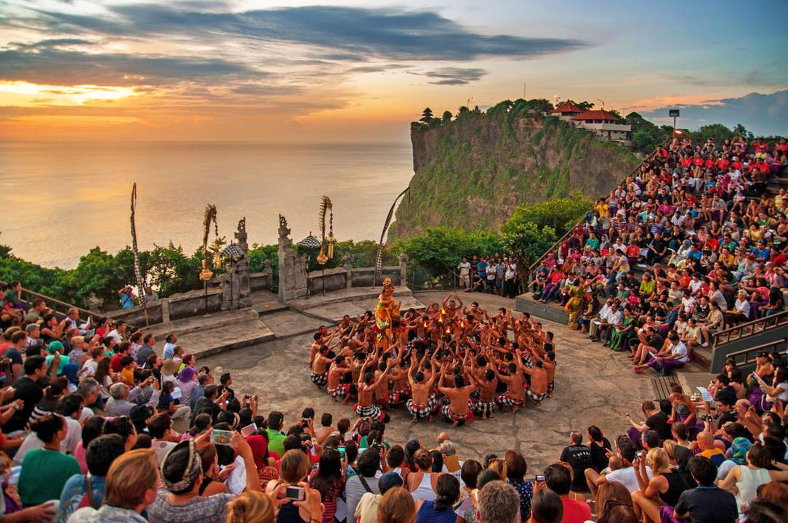

Tari Kecak di Uluwatu Bali
Tari Kecak adalah pertunjukan drama tari khas Bali yang unik dan terkenal, terutama karena irama "cak-cak-cak" yang khas dan cerita yang diambil dari epos Ramayana. Tarian ini dibawakan secara massal oleh banyak penari laki-laki yang duduk melingkar dan melakukan gerakan-gerakan tertentu sambil menyerukan "cak-cak-cak". Asal-usul dan Sejarah.
Tari Kecak berasal dari ritual Sanghyang, tarian yang melibatkan penari yang tidak sadar dan berkomunikasi dengan dewa atau roh leluhur. Pada tahun 1930-an, Wayan Limbak dan Walter Spies menciptakan tari Kecak dengan menggabungkan unsur-unsur ritual Sanghyang dan cerita Ramayana. Tari ini bukan hanya seni pertunjukan, tetapi juga bentuk spiritual dan budaya yang diwariskan secara turun temurun. Pertunjukan ini sangat disarankan untuk wisatawan yang ingin merasakan kedalaman budaya Bali.
Keunikan Tari Kecak
1. Gerakan Tari Kecak dilakukan dengan posisi duduk dengan formasi melingkar dan tangan digoyangkan di atas kepala.
2. Busana sederhana, berupa kain sebagai celana pendek dan penutup kepala. Penari kecak tidak menggunakan atasan.
3. Gerakan tangan di atas kepala merupakan lambang dari lidah api yang menyala.
4. Tarian diiringi bunyi dari mulut para penari, yakni "cak cak cak" yang diucapkan dengan tegas dan berulang.